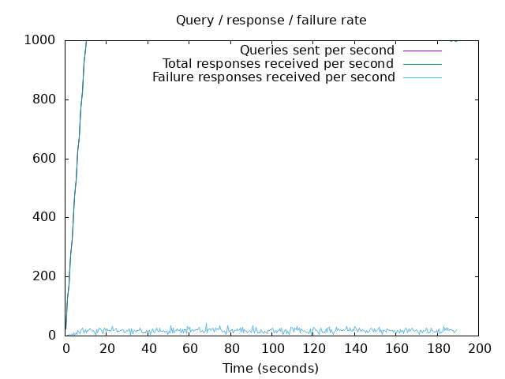
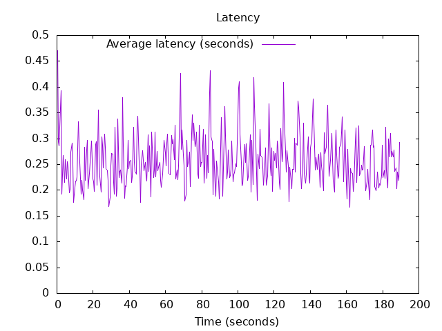

DNS Resolution Performance Testing Tool Version 2.14.0 [Status] Command line: resperf -P 20250619-1333.gnuplot -M doh -s 79.127.218.224 -O doh-uri=https://protective.joindns4.eu/dns-query -d domains_shuffled.list -C 500 -m 1000 -b 1400 -q 500000 -R -r 10 -c 180 -t 30 -F 0 [Status] Sending [Status] Ramp-up done, sending constant traffic [Status] Waiting for more responses Warning: received a response with an unexpected id: 363 [Status] Testing complete Statistics: Queries sent: 184999 Queries completed: 184995 Queries lost: 4 Response codes: NOERROR 125253 (67.71%), SERVFAIL 3414 (1.85%), NXDOMAIN 56328 (30.45%) Run time (s): 219.553914 Maximum throughput: 1000.000000 qps Lost at that point: 0.00% Connection attempts: 815 (564 successful, 69.20%) DNS-over-HTTPS statistics: HTTP/2 return codes: 200: 184996
 